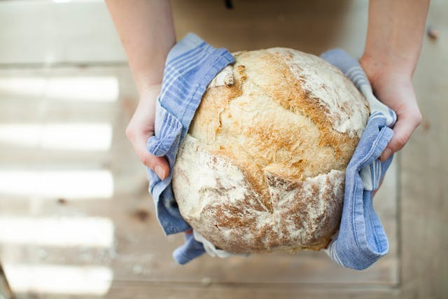

Basic-Ass Bread

Ingredients
- Flour 1000g
- Salt 20g
- Yeast 2g
- Water 575g
Steps
- Mix the flour, salt, yeast, and water in a large bowl.
- Cover and leave on the counter for 8 hours.
- Once the dough triples in size, split it into 2 loaves.
- Bake a 475 degrees in a covered dutch oven for 30 minutes.
- Remove lid and continue baking until reaching desired darkness of crust.